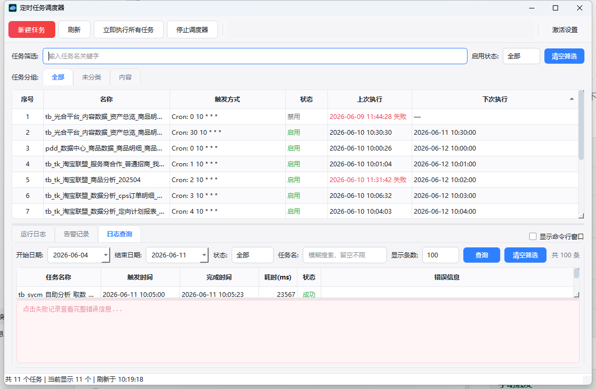
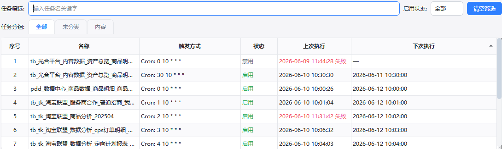
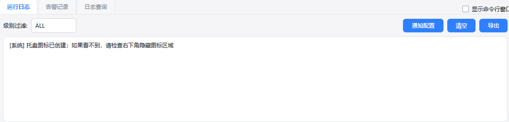

任务集中管理
在列表里查看任务名称、触发方式、状态、上次执行和下次执行时间。

Overview
当客户需要定时运行脚本，但又不想写调度代码、配置服务器或记命令时，可以使用这个工具集中管理任务。
在列表里查看任务名称、触发方式、状态、上次执行和下次执行时间。
支持 Cron、固定间隔和指定时间，覆盖周期任务和一次性任务。
执行过程会输出到日志面板，异常信息进入告警记录，方便排查。
关闭主窗口后可隐藏到系统托盘，任务继续运行，不打断客户工作。
Interface
上方是任务筛选和任务列表，下方是运行日志、告警记录和日志查询。


How To Use
客户按下面顺序操作即可完成一个任务配置。
For Customers
这个工具适合交付给需要“定时跑任务，但不想折腾服务器和命令行”的客户。
FAQ
会。程序支持隐藏到系统托盘，主窗口关闭后任务仍可继续运行。
不强制。工具会优先使用脚本项目自己的虚拟环境，其次使用电脑上的公共 Python。
不会。任务配置使用本地 SQLite 保存，重启后会恢复已启用任务。